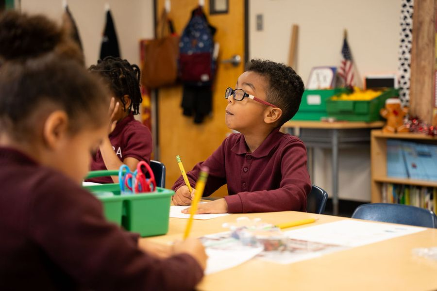
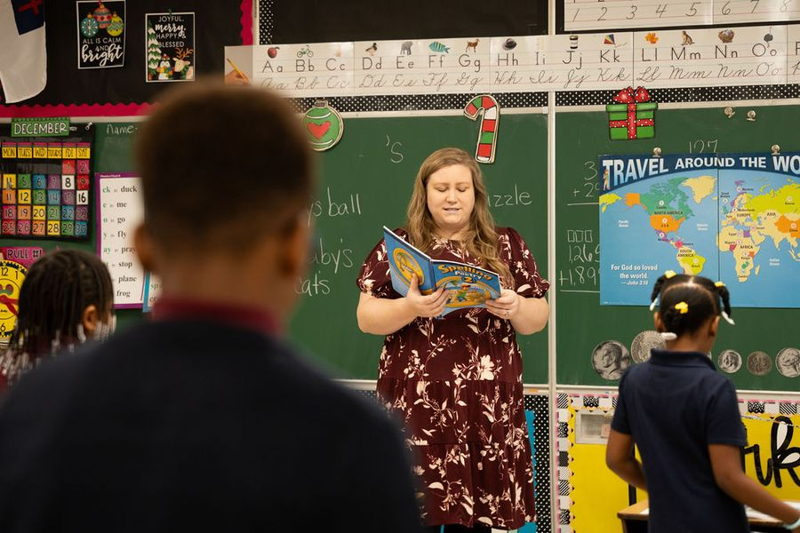
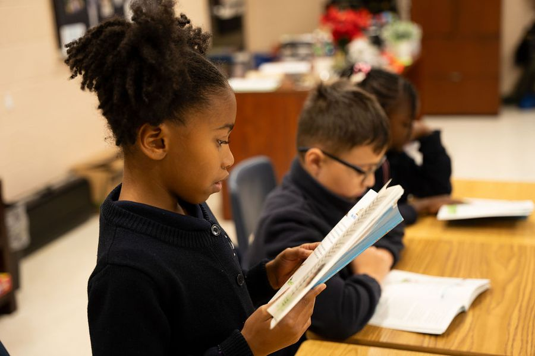
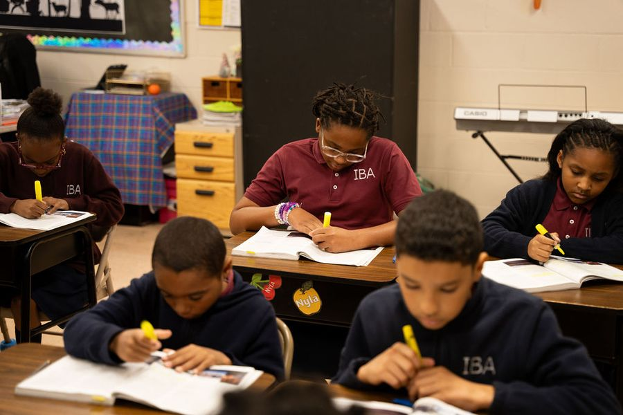
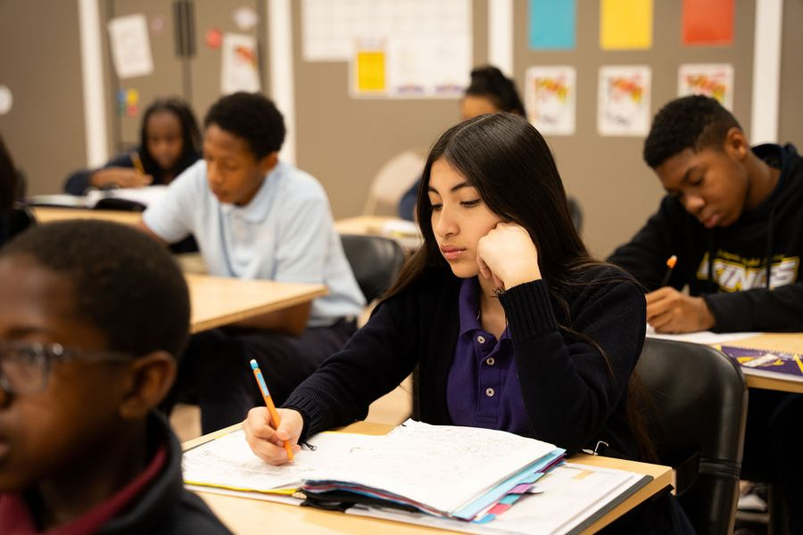
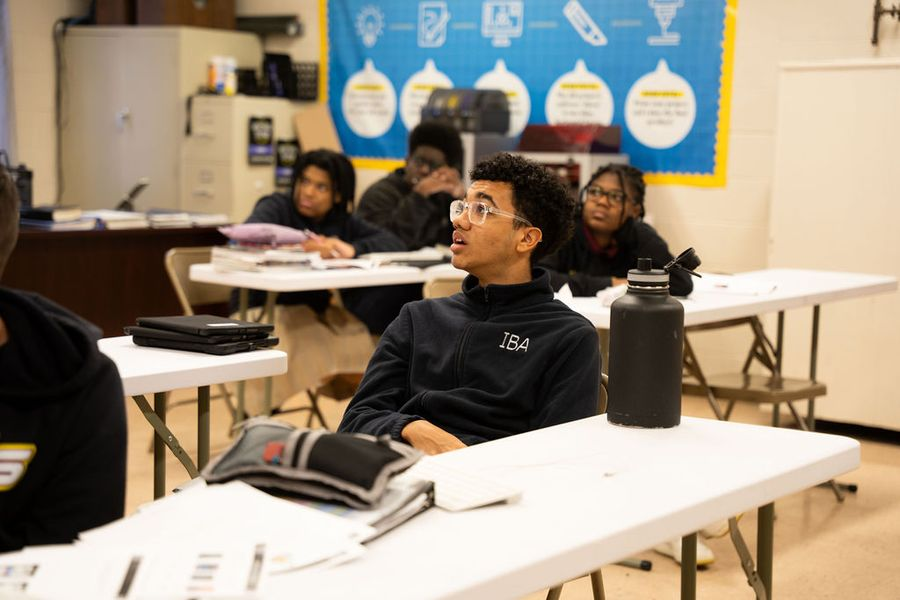

Academics
The following are summaries of the Scope and Sequence for each grade level. More information can be given upon request.

Kindergarten
Our kindergarten program is designed to prepare the student socially and mentally for his future years. Students will begin many of their basic learning skills, which they will continue into their elementary years. Our students learn to read by using the Abeka reading program, a time-proven phonetic approach. They learn to recognize the name, sound, and picture of long and short vowels and consonants; the sounding of blends for one and two-vowel words; and reading of sentences and stories with one- and two- vowel words. In handwriting, they learn the formation of letters, blends, words and the writing of their first name. Language development and listening skills include color words, shapes, animals, transportation, countries, community helpers, health, safety, manners, and science. Daily work in numbers includes number recognition, counting, and writing 1–100; number concepts 1–100; numbers before and after 1–100; numbers largest and smallest 1–100; counting and writing by tens to 100; counting and writing by fives to 100; counting and writing by twos to 100; number sequences by ones; using number words 1–10 and first–tenth; value of coins and dollar bill; telling time; using the calendar; days of the week; addition facts through 10; one-step story problems; addition; and beginning subtraction. All which prepares the student to excel in elementary.
In their writing and language class, students learn how to write letters, blends, words, sentences, and their full name. Language Arts stresses recognition of sentences by capital letters and periods. Social Studies centers around units on “Community Helpers,” “Children of the World,” and “America” with emphasis on map studies, famous Americans, and famous places. Science and health units include study of plants, animals, the sea, earth, space, weather, seasons, and God’s plan for us. Bible and music are also enjoyed by our kindergarten students. Character training is stressed as well as patriotism and respect for authority.

Elementary: Grades 1–2
Our elementary students continue their academic program with the Abeka Book curriculum. “Abeka Book provides Christian schools with outstanding curriculum and textbooks built on a foundation of academic excellence and Christian character training. Textbooks and teaching materials reflect the very best in traditional education, comprehensive curriculum, and eternal truths.” (Abeka website)
Our elementary students are taught basic skills in all subject areas along with daily instruction in the Bible. Subjects include math, language, spelling, poetry, history, science, art, and penmanship, thus giving the elementary student a well-rounded education.

Elementary: Grades 3–4
Along with daily instruction in the Bible, our students are taught math, language, spelling, poetry, history, science, art, and penmanship. Reading continues to be taught with the emphasis changing to comprehension. Students are no longer learning to read. They are reading to learn.
In addition to the main curriculum, both third and fourth grades are able to enjoy a weekly music class and a computer class. Participation in chapel programs and Parent Teacher Fellowships (PTF) are offered throughout the year. In addition, a fall and spring intramural program is offered.
It is in these intermediate grades that a transition in learning takes place. There is a big change in academic requirements. Material in the primary grades is not as textbook dependent nor does it place as much emphasis on content-based material. Many children with good thinking skills and some prior knowledge have previously been able to be successful without acquiring study and time management skills. Now there will be increased responsibilities on the part of the student. Studying at home will be necessary for success in history, science, spelling, and vocabulary. These courses contain very specific content and studying at home will be needed.
In addition to the change to the content-based material of science, history, and spelling, students will need to be ready for the intensive fast-paced math and grammar courses.

Middle School: Grades 5–6
Our middle school program is designed to continue developing the basic skills begun in the lower elementary grades. Bible, of course, continues to play an integral part of our curriculum. Subjects such as math, language, spelling, poetry, geography, history, science, art, and penmanship are further strengthened. Reading skills now completely turn to comprehension. All grades continue to be taught in the traditional manner with a main teacher for the classroom. Subjects include Bible, language, mathematics, science, reading, spelling, health, and history. Participation in chapel programs and Parent Teacher Fellowships (PTF) are offered throughout the year. Three electives are taught in the fifth and sixth grades: music, computer, and Spanish. We also offer a fall and spring intramural program. At times, sixth grade students are allowed to participate in IBA’s high school sports program, which includes soccer, volleyball, and basketball.
As was begun in the intermediate grades, there is an even bigger change in academic requirements in fifth and sixth grades. Material becomes even more content-based. History, science, spelling and vocabulary content are very specific and studying will be necessary for success. English and math will increase in difficulty and will often require daily studying to learn a concept (Note: English and math are stair-step courses that require a student to master one concept in order to move on to the next concept).
There will be even more responsibilities on the part of the student to become an independent and organized student. Students will need to continue to develop their study and time management skills.

Junior High School: Grades 7–8
In seventh and eighth grade, students begin the process of having many different teachers. Courses include Bible, English, math, science, literature, spelling, health, music, Spanish, computer, and history. At this grade, a weekly chapel program for spiritual growth is added.
Perhaps one of the biggest adjustments for a student comes when he enters junior high. Different teachers with different personalities and different teaching styles now come into play. There will no longer be a central teacher overseeing the student’s work who reminds the student when work is due.
Material is extremely content-based. History, science, spelling and vocabulary content are very specific and studying will be necessary for success. Some courses will now have daily homework assignments, especially English, math, and foreign language. English and math will increase in difficulty and will often require daily studying to learn a concept (Note: English, math, and foreign language are stair-step courses that require a student to master one concept in order to move on to the next concept).
Multiple tests may be given on the same day. Quarter, midterm, and final exams are added. This puts even more responsibilities on the part of the student to be an independent and organized student. Students must develop good study and time management skills. Independent studying will be necessary for success. With continued awareness and support on the part of the parents of these increased responsibilities, students should have no difficulties in meeting these challenges and becoming a more independent, organized, and confident student.

High School: Grades 9–12
For graduation, Independent Baptist Academy requires the successful completion of an academic program in excess of the requirements of the State of Maryland. To graduate from the Academy, a student must accumulate 27 credits during ninth through twelfth grades. Because this is a Christian school, each student must successfully pass a Bible class each year he attends the Academy. In order to maintain high academic standards in areas of English, students are required to take their English courses at Independent Baptist Academy. English taken in summer school elsewhere will be honored only after the student has scored at an acceptable level on an English test administered by the Academy.
High school will bring with it the greatest challenges yet. Students will continue to have different teachers with different personalities and different teaching styles. History and science courses are content specific and studying will be necessary for success. English and math courses will generally have daily homework assignments. Math increases in difficulty and will often require daily studying to learn a concept (Note: Math is a stair-step course that requires a student to master one concept in order to move on to the next concept). Studying will be necessary for success. Foreign language classes, such as Spanish I and II, will also bring with them a new dimension to studying. Daily homework assignments, with frequent quizzes and tests, are given. Since most students are learning Spanish grammar and conversation for the first time, they do not have previously learned material on which to build such as they have for math or English. To keep their Spanish grades up, it will be necessary for students to review Spanish material daily. Any foreign language will require daily studying for success.
These added changes put even more responsibilities on the part of the high school student to be an independent and organized student. Independent studying will be necessary for success. Less class review will be done in these grades. It is imperative that students develop good study and time management skills. All these skills prepare high school students to be successful in college. With your awareness of these increased responsibilities, and your support, your child should have no difficulties in meeting these challenges and learning to manage his time thus becoming an independent and organized student.
Explore the Possibilities at IBA!
Come see the campus, meet our teachers, and ask your questions.